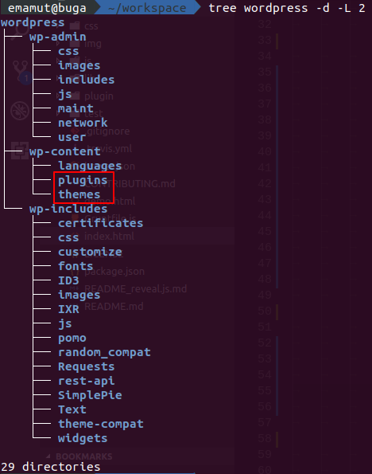

WordPress Tuluá
Buenas practicas en para desarrollo en WordPress
por Faber Andrés Vergara
@e_mamut
Qué es ?
- Control de versiones
- Alternativas
- SVN (SubVersion)
- CVS
- Perforce
- Bazaar
- Herramienta poderosa en el mercado
- Potenciador comunidad Open Source
Qué carpetas debería contener un repositorio de WP?
